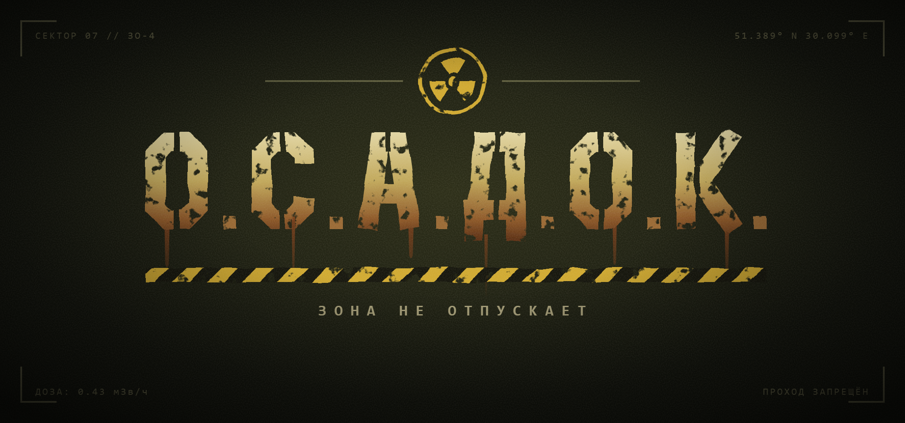

Двадцать лет назад выпал радиоактивный осадок. Пустошь выживает как может, а в её центре лежит Сектор Ноль — эпицентр, куда ходят только самые отчаянные.
Онлайн-выживание в Пустоши: стрельба, торговля, крафт и другие выжившие прямо на карте.
Одиночные вылазки в эпицентр: текстовое приключение с лутом, мутантами, артефактами и сюжетом.